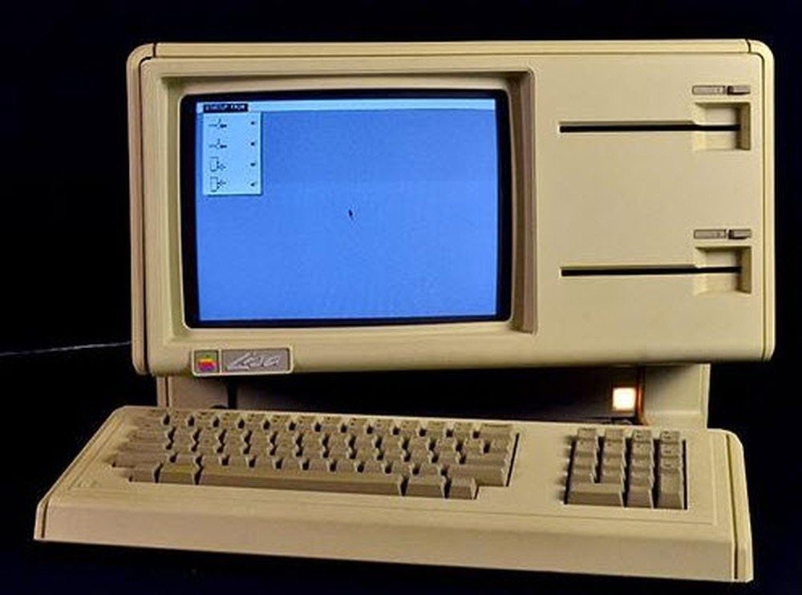

và những cống hiến của ông cho ngành Khoa Học Máy Tính
Máy tính Apple Lisa
 Hình 12: Máy tính Apple Lisa
Apple Lisa là một tiến bộ đáng kinh ngạc trong một hệ thống máy tính người dùng thân thiện, nhưng Apple không phát minh ra ý tưởng về giao diện đó. Rất khó để nói ai đã làm.Có một số trung tâm cũng đã tạo ra ý tưởng về giao diện như vậy những không được thương mại hoá. Ví dụ như Trung tâm nghiên cứu Palo Alto của Xerox (PARC) tạo ra các máy tính đầu tiên với một giao diện người dùng đồ họa và một con chuột, trong năm 1973. Tuy nhiên sản phẩm của họ không bao giờ được giới thiệu đến công chúng. Mặc dù Apple đã bỏ rất nhiều thời gian và tiền bạc phát triển Lisa( mất đến gần 4 năm để phát triển với kinh phí hơn 50 triệu đô), nhưng lai đưa ra được sản phẩm không được đánh giá cao do giá thành đắt đỏ và vài ứng dụng dụng phức tạp, không thiết thực. Ngoài ra, nó còn khá chậm và phức tạp, ổ đĩa mềm chậm và không đáng tin cậy. Bởi vì điều này, sau khi đã bán khoảng 6.500 máy tính Lisa, Apple cung cấp một đường dẫn nâng cấp cho chủ sở hữu Lisa, thay ỗ đĩa cũ bằng một cái mới dáng tin cậy hơn. Do đó số sản phẩm bán được sau lần nâng cấp là hơn 100.000.